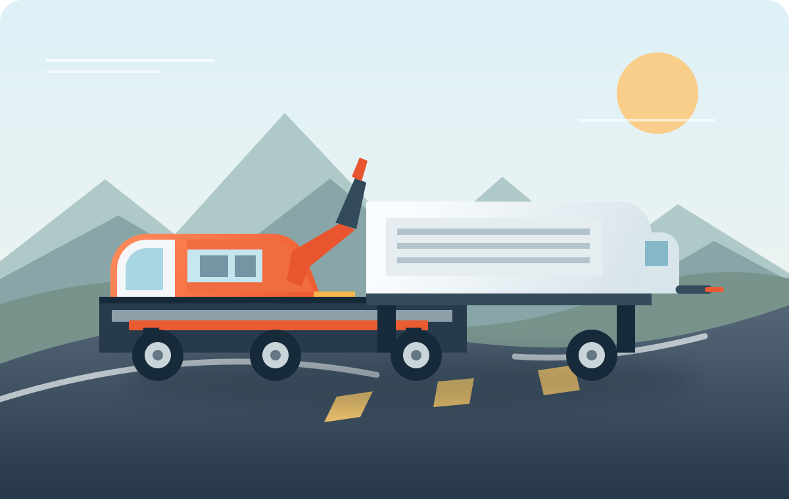

Vehicle recovery
Careful transport for vehicles that can't safely continue under their own power.
Recovery detailsHeavy-duty towing and recovery guide
For larger vehicles and complex recoveries, careful planning starts with the vehicle, load, location, and access details. Use this guide to prepare the right questions before arranging service.
Template demo: The contact form, phone number, coverage illustration, and example pricing are placeholders. This site does not arrange live towing or dispatch.
Purpose-built support
From a single vehicle move to a more involved recovery, start with the situation and get the appropriate service plan.
Careful transport for vehicles that can't safely continue under their own power.
Recovery detailsCoordinate towing for larger vehicles and equipment with the right provider and capacity.
Heavy-duty detailsProfessional assistance after an incident, with careful coordination around the scene.
Recovery optionsFor larger vehicles and complex moves
Vehicle size, load, access, and road conditions can all affect equipment selection. Share the details with the team so the request can be assessed before dispatch.

Share what you know, then confirm provider availability, timing, and equipment before authorizing service.
A considered response
Clear information helps us coordinate the appropriate next step for your vehicle, site, or fleet.
Describe the vehicle, location, access conditions, and any safety concerns.
Ask the provider to confirm service availability, equipment, estimated arrival, destination, and the full quote.
Receive clear updates while the recovery or transport request is underway.
Equipment that fits the request
Every request is different. RoadRescue helps identify the service category and coordinate the right equipment for the vehicle and recovery conditions.
For careful loading and vehicle transport.
For larger vehicles and complex access.
For common breakdown and mobility issues.
For business vehicles and operations teams.
Regional Dispatch Network
From dense metropolitan corridors to major interstate freight expressways, RoadRescue maintains dedicated heavy-duty wreckers, lowboy trailers, and rapid mobile diagnostics units staged along key routes for immediate deployment.
Guaranteed 24/7 service coverage across central metro districts, bypass loops, and connecting county highways.
Direct commercial dispatcher coordination with real-time driver ETA updates and GPS tracking.
Specialized multi-axle rotators staged near freight terminals for loaded semis, buses, and heavy equipment.
Support for work on the move
Keep drivers and operations teams connected with a straightforward roadside and recovery contact.
Coordinate roadside needs across company cars, vans, and service vehicles.
Open demo contact formKeep drivers informed and help arrange the next step when a vehicle is delayed.
Open demo contact formCoordinate vehicle movement and roadside assistance for customers and teams.
Open demo contact formPrepare for a heavy-duty request
Accurate information helps a provider assess capacity, access, routing, and the safest next step.
Share vehicle type, approximate dimensions and weight, and whether it is loaded or carrying special cargo.
Give the precise location, road direction, nearby hazards, ground conditions, and any height or access limits.
Identify the preferred drop-off point and ask whether route restrictions or distance affect the plan.
Provide a reachable contact and explain site access or coordination needs for your driver or operations team.
Understand the full quote
Heavy-duty towing and recovery needs vary. Ask for an itemized estimate based on your vehicle, load, location, and requested destination.
See pricing optionsQuestions to ask
Confirm the final amount and any conditions that could change it before service begins. Pricing on this demo site is illustrative.
Recovery questions, answered
Share your exact location, vehicle type and approximate weight, load status, visible damage or issue, access conditions, and preferred destination.
Capacity and equipment vary. Confirm the vehicle dimensions, gross weight, load, and any special handling needs with the provider before dispatch.
Distance, vehicle and load, recovery complexity, access, equipment, waiting time, tolls, storage, and local charges may affect the estimate. Request a full quote and confirm what could change it.
No. This is a front-end template demo. Its contact form, phone number, pricing, and coverage examples are placeholders and do not reach a dispatcher or arrange service.
Keep people away from traffic and follow instructions from local authorities. If anyone is injured or in immediate danger, contact local emergency services first.
Arrival estimates depend on your location, traffic, weather, provider availability, and the equipment required. Ask for an estimated arrival window and how to receive updates.
Passenger policies and available seating vary by provider and local rules. Arrange a safe ride for everyone before service begins, and confirm the provider's policy rather than assuming passengers can travel with the operator.
Tell the provider what the vehicle is carrying, especially if the load is heavy, hazardous, temperature-sensitive, or needs special handling. Confirm whether cargo must be secured, removed, or transferred before recovery.
A vehicle that is stuck off the road, on soft ground, or difficult to access may need specialist equipment. Describe the vehicle's position and ground conditions; do not attempt a recovery yourself near traffic or unstable ground.
Review the service options and confirm availability directly with a local provider.